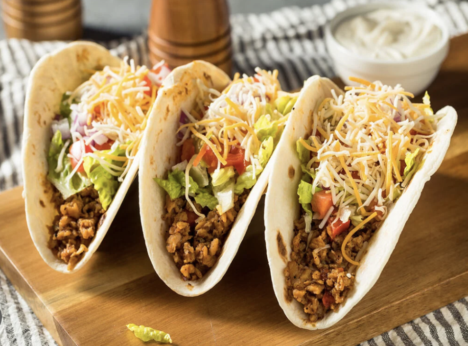

Tacos Recipe

Description :
Tacos are a popular Mexican dish consisting of a corn or flour tortilla filled with various ingredients like meat, vegetables, and cheese
The tortilla is typically folded or rolled around the filling, making it a handheld and easily portable meal.
Ingredients :
- Chicken Broth
- Taco seasoning
- Boneless Chicken
Steps :
- Combine Chicken Broth and Taco seasoning in a bowl
- Place Chicken in a slow cooker
- Pour Chicken Broth mixture over Chicken
- Cook on low for 6-8 hours
Home